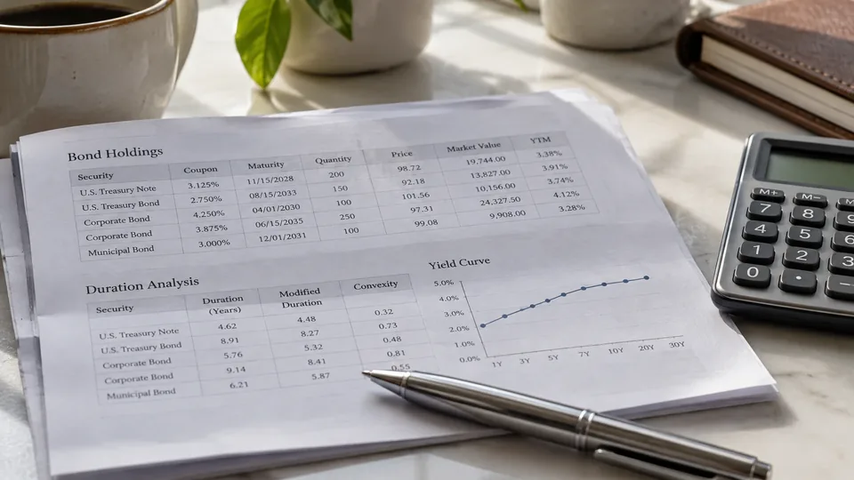

Duration Estimates a Bond's Sensitivity to Yield Changes
Maturity and duration are different measures. Modified duration gives a first-order price estimate, with limits for larger moves and complex bonds.

A bond can have ten years left before repayment and still have a duration well below ten. The distinction matters because maturity identifies a payment date, while duration helps describe how the investment responds when the yield used to value its payments changes. Reading one as the other can produce a misleading estimate of risk.
Duration is most useful when its definition and assumptions are stated. A number in a fund fact sheet should start a comparison, rather than end it. The same duration can sit alongside very different credit quality, liquidity and exposure to changes in the shape of the yield curve.
Start with the cash flows
Macaulay duration measures the present-value-weighted timing of a bond's promised payments. A coupon bond returns some money before its final maturity, so its weighted payment timing is generally earlier than that final date. A zero-coupon bond concentrates its promised payment at maturity. These are descriptions of contractual cash flows, subject to the issuer meeting its obligations.
Modified duration converts payment timing into an approximate price sensitivity to yield. Effective duration instead uses modeled price changes and can account for cash flows that themselves change with rates, such as those of a callable security. Comparing these measures without checking the definition can make two investments look more alike than they are.
A small yield change, translated into dollars
Consider a hypothetical holding worth $20,000 with modified duration of six. For a small yield change, the first-order estimate is percentage price change approximately equal to minus duration multiplied by the yield change expressed as a decimal. A rise of 0.25 percentage points is 0.0025, giving an estimated decline of 1.5%, or $300.
If the same yield fell by 0.25 percentage points, the linear estimate would be a $300 gain. These calculations describe an immediate repricing under fixed assumptions. They exclude coupon income earned during the holding period, transaction costs and changes in the investor's tax position. They are teaching examples, not a forecast for a particular bond.
The units deserve attention. A 25-basis-point increase means 0.25 percentage points. A rise from 4% to 4.25% is not a 25% increase in yield, and entering 0.25 rather than 0.0025 in the formula would exaggerate the estimate one hundred times.
Why the approximation eventually bends
Bond prices do not generally move along a straight line as yields change. Convexity captures part of that curvature. A duration-only estimate can become less reliable for a large move or a security whose cash flows depend on interest rates. The calculation should not be extended mechanically from a small rate change to an extreme scenario.
A callable bond illustrates the problem. If falling rates make refinancing attractive, the issuer may exercise its contractual option to repay early. The investor's expected stream of higher coupons can shorten. A model that assumes those payments remain unchanged may overstate the price benefit from lower rates.
A rate forecast is not a complete bond forecast
Suppose a hypothetical corporate bond's benchmark yield falls by 0.30 percentage points, but the extra yield investors demand for its credit risk rises by 0.50 points. Its total required yield would rise by 0.20 points. A duration estimate applied only to the benchmark move would point in the wrong direction for the combined yield effect.
This is why credit spreads and the issuer's finances need a separate reading. Likewise, a portfolio duration usually summarizes an assumed movement in yields. Short- and long-term yields can move by different amounts, leaving a portfolio with exposures that one average number cannot fully describe.
Funds and spending dates require another distinction
For an individual bond, maturity provides a contractual repayment date, subject to default and any relevant terms. An ordinary bond fund holds a changing collection of securities. As bonds mature or are sold, the manager can replace them, so waiting several years does not necessarily make the fund's interest-rate exposure disappear.
For a hypothetical portfolio split equally between investments with durations of two and eight, the simple weighted duration is five. That is useful arithmetic, but the result does not establish that the portfolio will pay a known amount on a particular future date. Portfolio turnover, distributions and different yield movements still matter.
A practical reading therefore pairs duration with the measure's definition, the size and type of yield shock, credit exposure and the date the money is needed. Low duration can reduce one sensitivity while leaving substantial default or liquidity risk. The number describes a dimension of the investment, rather than certifying the safety of the whole position. The October 21 Treasury reopening gives a concrete example of an existing coupon trading at a price that produces a different yield.
Sources and methodology (2)
Primary references support the definitions and reporting methods above. All examples explicitly labeled hypothetical or illustrative are TTN calculations, not current quotations or documented company transactions.
TTN analysis for informational purposes. This article is not investment, tax or legal advice.